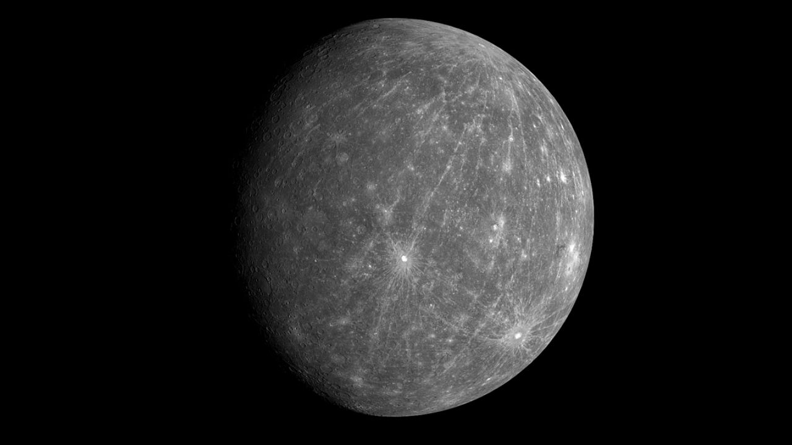
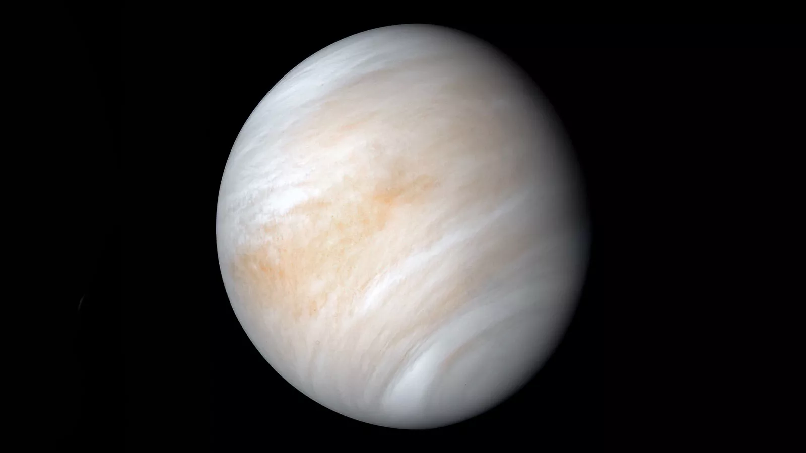
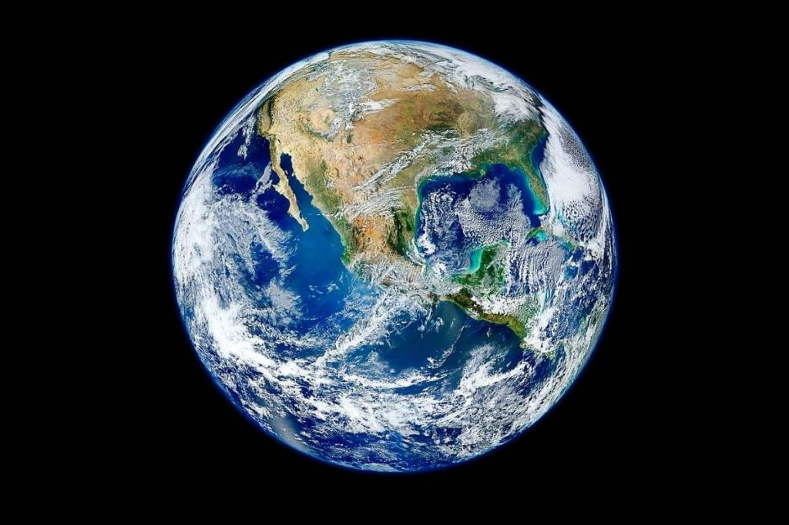
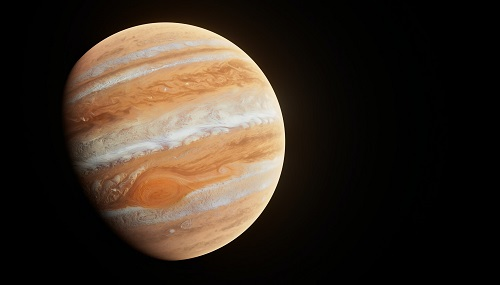
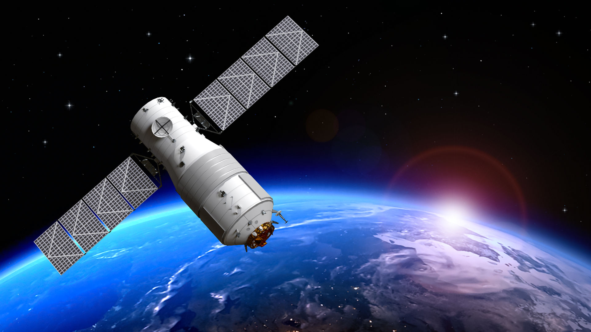
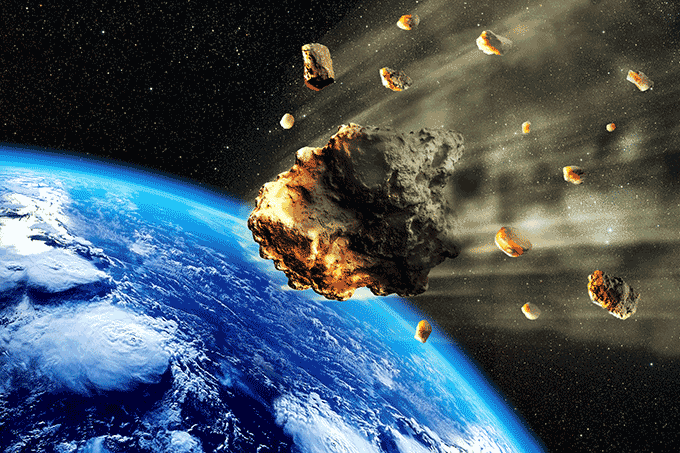
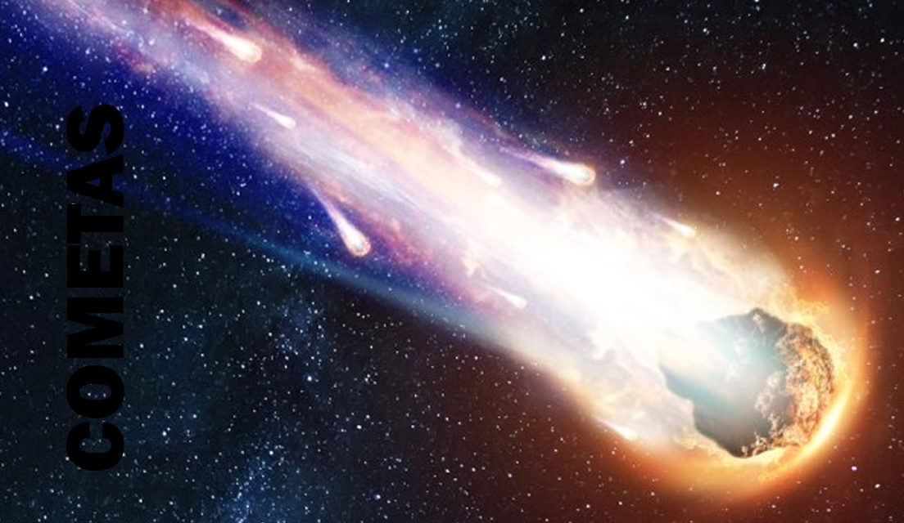

Sistema Solar
O Sistema Solar é um conjunto de corpos celestes que gravitam na órbita de um sol (uma estrela).
O nosso sistema solar é formado por oito planetas: Mercúrio, Vênus, Terra, Marte, Júpiter, Saturno, Urano e Netuno.
Além deles, existem mais cinco planetas anões (Ceres, Plutão, Haumea, Makemake, Éris) e muitos outros astros, como satélites
naturais, asteroides, meteoros, meteoroides e cometas.
O Sol e todo o nosso sistema solar faz parte de uma galáxia, que se chama Via-Láctea.

Planetas do Sistema solar
Os planetas são astros sem luz nem calor próprio. No nosso sistema solar são conhecidos oito
planetas que de acordo com a proximidade do Sol estão representados na imagem a seguir.

Mercúrio

Mercúrio é o menor planeta do Sistema Solar e o mais próximo do Sol. É também o planeta mais rápido, um ano de Mercúrio (giro completo ao redor do Sol) é equivalente a 88 dias terrestres. Em compensação, um dia solar do planeta dura 2 anos (176 dias terrestres)
Vênus
Vênus é o segundo planeta mais próximo do Sol. Além do Sol e da Lua é o corpo celeste mais brilhante no céu. Por isso, é chamado também de Estrela d'Alva, Estrela Matutina ou Vespertina, aparente no céu antes do amanhece e logo depois do entardecer. A distância entre Vênus e a Terra é a menor distância entre planetas do Sistema Solar. Entretanto, Vênus é o planeta mais quente do Sistema Solar, sua temperatura média é de cerca de 460ºC, impossibilitando a visita de seres humanos no planeta.
Terra
A Terra é o terceiro planeta do Sistema Solar, o único que apresenta água em estado líquido e oxigênio em sua atmosfera, o que possibilita a vida no planeta. O movimento de rotação da Terra dura 23 horas, 56 minutos e 04 segundos e o ano terrestre é de aproximadamente 365 dias e 6 horas. A temperatura média da Terra é de 14ºC.
Marte

Marte é o segundo menor planeta do sistema solar. É conhecido como "planeta vermelho" pela coloração de sua superfície. Marte possui duas luas em sua órbita chamadas de Fobos e Deimos. O ano em Marte dura 687 dias terrestres e o dia marciano é muito parecido com o da Terra, 24 horas e 35 minutos. Sua temperatura média é de -63ºC.
Júpiter
Júpiter é o maior planeta do Sistema Solar, a área da superfície é mais de 120 vezes maior que a Terra. Formado principalmente pelos gases hidrogênio, hélio e metano e, ainda, um pequeno núcleo sólido no interior. A temperatura média do planeta é de -108ºC. O ano de Júpiter dura 11,86 anos terrestres e o dia tem a duração de 9 horas e 50 minutos. Júpiter possui 79 luas, a maior delas, Ganimedes, possui um diâmetro superior ao planeta Mercúrio.
Saturno

Saturno é o segundo maior planeta do Sistema Solar. É conhecido pelos anéis formados É conhecido pelos anéis formados principalmente por gelo e poeira cósmica. O diâmetro do planeta é de cerca de 100 000 km e nos anéis chega a 270 000 km, com apenas 150 metros de espessura. É composto, basicamente, de Hidrogênio (96%) e Hélio (3%). Sua temperatura média é de -139ºC. O Ano de Saturno dura 29,5 anos terrestres e o dia cerca de 10 horas e 35 minutos.
Urano

Urano é um planeta gasoso e sua atmosfera é constituída, principalmente, de hidrogênio, hélio e metano, com muita formação de gelo. É o planeta com a superfície mais fria do Sistema Solar, sua temperatura média é de -220 ºC. Uma particularidade de Urano é a inclinação de seu eixo, praticamente horizontal (97º), faz com que o planeta gire de lado em relação aos outros astros. A duração do ano de Urano é de 84 anos terrestres e o dia possui 17 horas e 14 minutos. Por conta de sua posição em relação ao Sol, seus polos passam 42 anos (terrestres) iluminados seguidos de 42 anos de escuridão.
Netuno

Netuno é o planeta mais distante do Sol. Um gigante gasoso, tal como Júpiter, Saturno e Urano. O planeta possui uma intensa atividade em sua superfície com os ventos mais fortes do Sistema Solar, chegando a 2000 km/h. O dia de Netuno dura cerca de 17 horas terrestres e o ano 164,79 anos na Terra. Sua temperatura média é de -201 ºC.
Satélites
Satélite é um corpo que acompanha ou gira em torno de outro, observado principalmente no campo da astronomia, seja ele artificial ou natural. Do ponto de vista da astronomia, um satélite seria tudo aquilo que orbita algo de maior tamanho, desde um planeta anão até galáxias inteiras (que orbitam outras de maior dimensão e força). Já no campo da astronáutica – ciência que desenvolve máquinas que ocupam a atmosfera terrestre e o espaço -, os satélites são objetos construídos pelo homem e que servem para mapear a superfície da Terra (fazendo fotografias da geografia do planeta, por exemplo), além de transmitir informações para todos os cantos do mundo e do Universo.
Asteroides
"Os asteroides são corpos rochosos de estrutura metálica que orbitam em torno do sol como os planetas, mas que possuem uma massa muito pequena em comparação a eles. Seu diâmetro pode alcançar centenas de quilômetros, mas também pode ser de alguns poucos metros. Não costumam ter uma forma definida, apresentando as mais diversas aparências. Existem duas teorias que apontam o seu surgimento e formação. A primeira – mais aceita pela comunidade científica – afirma que os asteroides se formaram a partir da explosão que deu origem ao nosso sistema solar e que não se fundiram a nenhuma massa de nenhum planeta. A segunda afirma que eles se formaram a partir de restos e detritos de planetas ou parte deles, resultantes da colisão entre dois corpos celestes."
Cometas

Outros astros que se aproximam da Terra são os cometas. Eles são corpos temporários que descrevem órbitas alongadas, compostos de matéria volátil (que evapora facilmente, como líquidos e gases) em forma de gelo, grãos de rocha e metal. Corpos sólidos, se evaporam quando se aproximam do Sol, liberando vapor, gás e poeira. Seu núcleo sólido é envolvido por uma "cauda", que brilha ao refletir a luz do Sol. Cada vez que o cometa passa perto do Sol, perdem parte de sua matéria ou acabam colidindo com ele, ou com planetas grandes. O mais conhecido é o Cometa Halley.